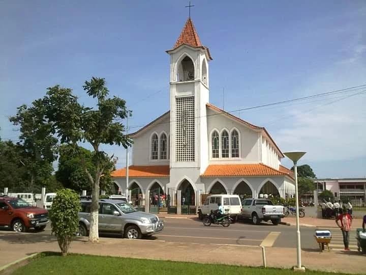

Lunda Sul
Uma província do leste de Angola, reconhecida pela sua riqueza mineral, tradições ancestrais e diversidade cultural.

Sobre a Província
Lunda Sul está localizada na região leste de Angola. A sua capital é Saurimo. A província destaca-se pelos seus recursos naturais, pela atividade diamantífera e pelo património histórico e cultural.
História
A história da Lunda Sul está profundamente ligada ao antigo Reino Lunda, uma importante organização política e cultural da África Central. As tradições dos seus povos continuam a fazer parte da identidade da região.
Economia
A exploração de diamantes representa uma das principais atividades económicas da província. A agricultura, o comércio, a pecuária e os serviços também contribuem para a economia local.
Cultura e Tradições
A cultura da Lunda Sul é marcada pelas tradições dos povos Lunda e Chokwe, entre outros. As danças tradicionais, a música, o artesanato e as máscaras culturais constituem elementos importantes do seu património.
Identidade
Lunda Sul representa uma parte importante da diversidade angolana. A sua história, riqueza natural, tradições e hospitalidade contribuem para a identidade nacional.